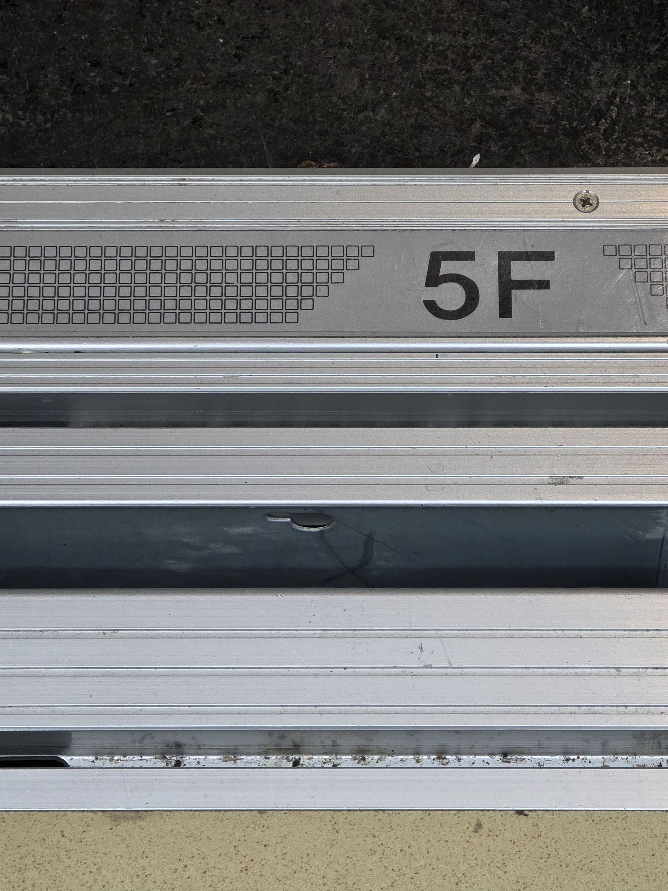
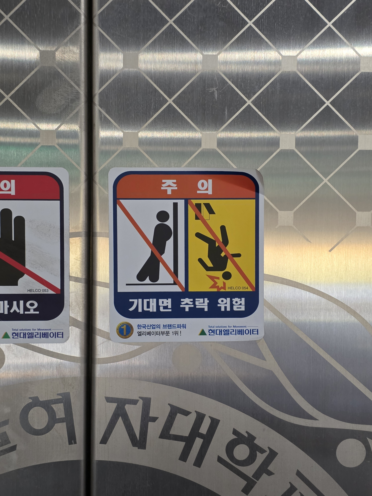

엘리베이터 사이에 보이는 저건 뭘까?
엘리베이터는 구동방법이나 로프의 유무에 따라 권상식, 권동식, 순환식, 유압식, 랙/피니언방식 등으로 분류할 수 있어요. 우리가 일상속에서 보는 엘리베이터는 대부분 모터나 기어 업이 도르레로 구동되는 기어리스 엘리베이터이고, 그중에서도 권상식 엘리베이터랍니다. 권상식 엘리베이터는 엘리베이터 카(엘리베이터 본체)와 균형추를 로프로 연결하고 도르레를 이용하여 카를 끌어올리는 방식으로 작동됩니다. 이때 소모전력이 많은것을 감수하고 움직도르래를 균형추에 추가하면 승차감이 좋아지게 되지요. 그런데 이 무거운 엘리베이터가 어떻게 정지하는 걸까요? 바로 사진 속에 있는 리미트스위치류 때문입니다. 리미트스위치류는 균형추가 완충기에 도달하기 전에 작동해서 엘리베이터를 정지하는 역할을 해요.
엘리베이터는 어떻게 오차없이 정확한 층에 도착할 수 있는걸까?
엘리베이터는 지금이 몇층인지 어떻게 알아차리는 걸까요? 엘리베이터 본체에는 자기센서/광학센서가 있습니다. 승강로가 설치된 벽면에는 센서가 감지할 수 있는 금속 띠가 있지요. 부착된 센서가 띠를 지나면서 펄스신호(기준값에서 급격히 변화했다가 다시 돌아오는 신호)를 감지하면서 지금 우리가 몇 층을 지나고 있는지 위치를 파악하게 됩니다. 위치를 감지했으면 속도를 파악하고 레벨링 하는 단계로 들어갑니다. 우리가 원하는 층을 누르면 제어발이라는 이름을 가진 마이크로 컴퓨터가 위치와 목적 층 간 거리를 계산하게 됩니다. 목적층에 거의 도착하면 착상센서가 가동해서 최종 정지 지점을 감지해요. 이때 10mm 밖으로 오차가 나지 않도록 미세 조정하는 과정을 거치게 되고 우리는 무사히 원하는 층에 도착할 수 있게됩니다.
엘리베이터가 추락하는 동시에 점프하면 살아남을 수 있을까?
내용